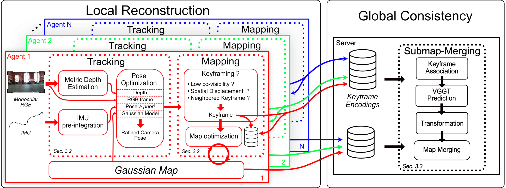
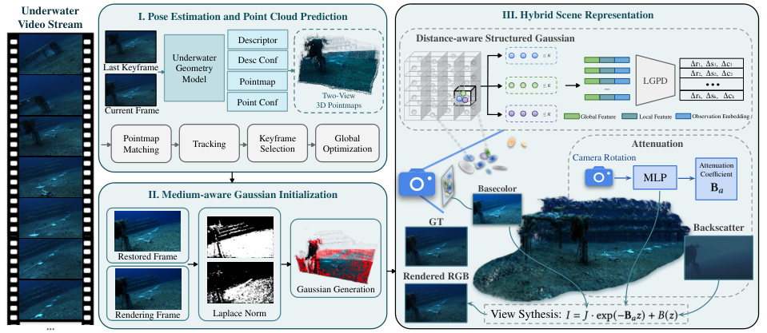
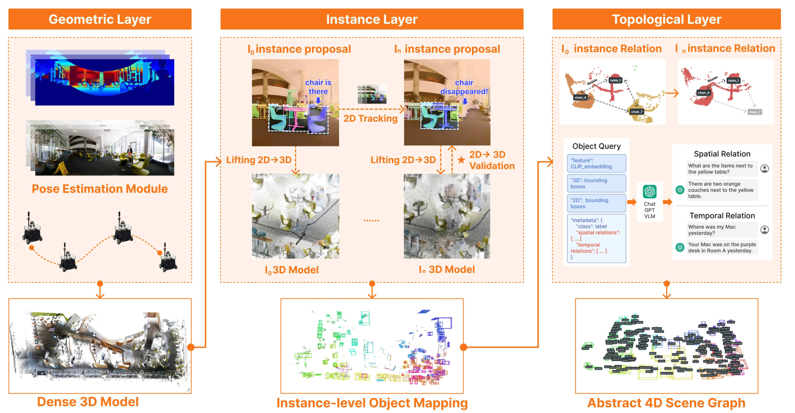
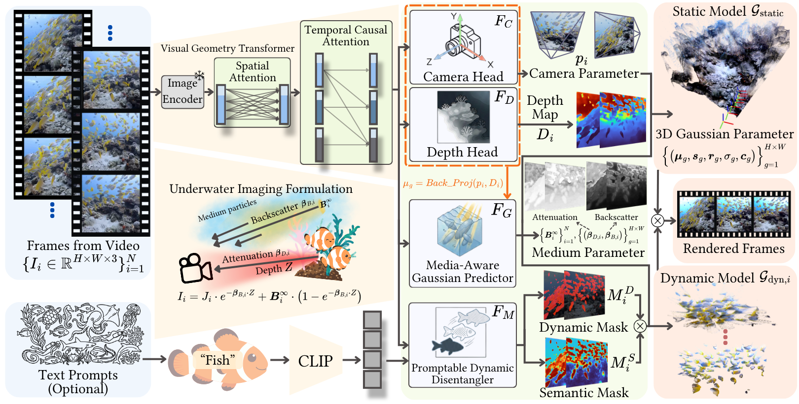
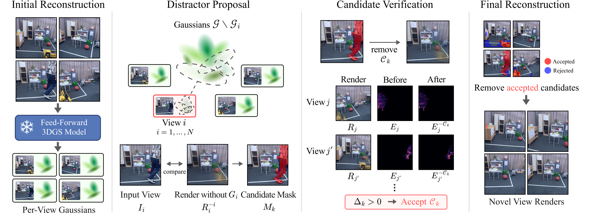

Executive Summary
本期最重要的系统信号是：3D 表示不再只是单机渲染结果，而在向“多智能体共享地图、介质感知几何、可查询长期记忆”分化。 CGS-SLAM 用轻量 descriptor 交换与服务器端 VGGT 完成多 agent 子图对齐；AquaFlow 把水下衰减/后向散射写入 3DGS 成像链；SuperMap 把几何层、实例层和 4D scene graph 串成在线查询接口。三者都保留了显式 pose、association 或物理模型，而不是把长期一致性完全交给端到端网络。
前馈 3D/4D 的近期增益越来越依赖“输出后的几何或证据校验”。 NemoSplat 用 causal geometry transformer、动态/静态分解与水下介质参数实现流式 4DGS；Per-View Filtering 则不重训 backbone，而是利用每视图 Gaussian 归属提出 distractor，再用其它视图重建误差验证删除。后者消融显示 verification 是主要有效组件，同时也是运行时主要成本。
工程成熟度与论文热度仍明显脱节。 ffsplat 已有编码/解码、量化、聚类、PLAS 排序、viewer、tests 和格式文档，但项目自称 pre-alpha；OptiSight 有完整导航状态机与界面，却没有自动化聚合评测；SuperMap 论文给出完整系统与实验，公开仓库当前仍没有实现代码。因此本期不把“开源”直接等同于“可复现”。
Deep-read Papers
| 论文 | 系统/框架图 | 解决的问题 | 方法 / 结构 | Insight 与数学知识 | 实验与效果 | 复现与启发 | 阅读证据 |
|---|---|---|---|---|---|---|---|
| CGS-SLAM Collaborative SLAM3DGS |
 Fig.1：各 agent 本地 tracking/mapping 与服务器端 submap association、VGGT 对齐、合并。 |
多机器人协作 3DGS-SLAM 既要保持各端实时与低带宽，又要在无共享初始坐标系下把独立子图对齐成全局地图。 | 客户端以 RGB+IMU 工作：IMU 预积分给 pose prior，Depth Pro 给 metric monocular depth，3DGS photometric/depth loss 做 pose refinement 与 local BA。关键帧用 NetVLAD 发现重叠；服务器对匹配帧运行 VGGT，先做无尺度 pose 对齐，再最小二乘细化 SE(3) 变换并校正深度，最后直接合并 Gaussian 子图。 |
tracking 以不透明度阈值筛有效像素，联合 L1 图像与 Pearson depth correlation；mapping 组合 L1、D-SSIM 与深度。跨图配准将 VGGT 提供的共享 3D 点写成 min_T Σ‖TP_j−Q_j‖²。关键权衡是上传小型 descriptor/关键帧编码，把重型跨图几何放服务器。 |
TUM RGB-D 与合成多 agent UT-MM。快速直行序列中加 IMU 后 ATE 12.85→6.07 cm（作者报告约降 53%），PSNR +2.73 dB；三 agent 动态关键帧策略 ATE 68.13→39.63 cm。子图对齐误差低于 0.40 m、每对约 5 s，整体低于 10 s；客户端约 10 FPS、约 1 GB VRAM。descriptor 65 KB、1–2 KF/s，即每 agent <130 KB/s；地图 25–75 MB。 | Depth Pro 在 RTX 4090 服务器约 169 ms/关键帧，系统并非纯端侧。UT-MM 的多 agent/IMU 是合成组合，论文明确缺少真实同步多机器人 IMU 数据集。直接合图会在重叠区保留重复 Gaussian，且没有紧耦合全局 BA。未发现代码；优先复核真实时钟偏差、跨 agent 外参与网络抖动。 | 全文级。 阅读 Intro、local tracking/mapping、keyframe exchange、VGGT submap merging、TUM/UT-MM、动态关键帧/IMU消融、runtime、Conclusion；视觉确认 Fig.1。未读代码。 |
| AquaFlow Underwater SLAM3DGS |
 Fig.2：水下点图跟踪、介质感知 Gaussian 初始化和混合场景/成像表示。 |
单目水下视频同时存在尺度漂移、弱纹理、颜色衰减与后向散射；通用 SLAM/3DGS 很难在流式运行中同时稳 pose 与恢复外观。 | 在 224,273 对水下图像上微调 MASt3R，输出 metric pointmap、descriptor 与置信度；以鲁棒 Sim(3) pointmap matching、关键帧和 pose graph 跟踪。Gaussian 初始化用水下恢复帧与 LoG 区域补点。表示端以 voxel 分组汇聚局部/全局特征，LGPD 注意力预测 scale/rotation/color；相机旋转条件化衰减，距离条件化后向散射。 | 采用水下成像式 I=J·exp(−βₐz)+B(z)，把辐射颜色与介质参数分开；距离/视角编码让同一 Gaussian 在不同观察方向得到不同衰减。损失联合 L1、SSIM、depth、scale consistency，并用置信/有效区域 mask 控制弱监督。 |
62 条轨迹（25 public+37 in-the-wild）。6 个定位序列 AquaFlow ATE 为 0.422/0.958/0.157/0.182/0.211/0.478 m，均值 0.401；WaterSplat 为 0.432/0.882/0.350/0.335/0.139/0.636。作者概括定位误差较 WaterSplat 降 13.2%、PSNR +4.74 dB。FLSea-Canyons 全模型 34.47 dB/.953/.209；无 underwater fine-tune 为 33.41/.943/.247，无 distance embedding 为 32.56 dB。运行 0.51–1.08 FPS，依场景而变。 | 定位只在 4/6 序列领先 WaterSplat，均值优势不能掩盖单序列失败。速度仍低于实时控制频率，且复现需要自建水下 pair 数据与介质标定/训练细节。未发现公开代码；可先独立验证 distance embedding 与 medium-reduced initialization 是否改善现有 WaterSplat。 | 全文级。 阅读 Intro、underwater geometry model、tracking、hybrid representation、成像模型、数据集、定位/渲染主表、消融、效率与 Conclusion；视觉确认 Fig.2。未读代码。 |
| SuperMap 4D Scene GraphVLN |
 Fig.2：几何层→2D/3D 实例更新→可查询 4D scene graph。 |
开放词汇语义地图通常是离线静态快照；真实机器人需要在遮挡、消失、重现和长期变化下保持实例身份，并让语言任务查询空间与时间关系。 | SuperOdometry 融合 RGB-D/LiDAR+IMU 建 dense geometry；实例层用 2D tracker、3D centroid 投影和几何一致性做 association，并对存在概率和标签做持续更新；topological layer 把对象、空间边和时间边组织为 4D scene graph。VLM 读取序列化图，输出对象 ID 与 3D goal 给导航栈。 | 在线问题分解为 P(P_t|·)·P(I_t|·)·P(M_t|·)：pose、instance association、map update。3D→2D motion compensation 用当前 SE(3) pose 投影对象中心，给 Kalman state 提供先验；多帧 Bayesian/置信更新让地图可撤销旧标签和消失对象。 |
ScanNet class accuracy 55.48%，RayFronts 56.76%，所以并非该静态指标最佳。41 对象消融：无 2D tracker F1 .5780、无语义融合 .5201、无几何一致性 .5764、全模型 .6308。6 个变化对象的 detect recall 为 1/.262/.583/.755/.434/1，change recall 为 1/.622/.790/.865/.679/1。onboard：pose 10 Hz、segmentation 1 Hz、mapping 3 Hz、scene graph 5 Hz。VLN 只给定性案例，没有 SR/SPL benchmark。 | 硬件为 Livox Mid-360、全景相机、i9-14900H+RTX 4090 laptop 16 GB；VLM 使用 Gemini 2.0 Flash。限制是高度动态对象和预定义 detection prompt。公开仓库 316 stars/8 forks/4 commits，但树仅 README/doc；README 的 setup/config/run 路径在公开树中不存在，代码声称未充分验证。 | 全文+仓库审计。 阅读问题定义、三层方法、静态/动态实验、消融、runtime、VLN、Limitations 与 supplement；视觉确认 Fig.2；检查 repo tree/README，未见实现。 |
| NemoSplat Feed-forward 4DGSUnderwater |
 Fig.2：流式几何、相机/深度、介质参数与动态/静态 Gaussian 分解。 |
从未标定单目水下视频一次前向得到可渲染动态 4D 场景，同时处理相机、深度、鱼群运动、浑浊介质与长序列内存。 | 1.22B 参数模型以 DINOv2 图像编码和 causal streaming geometry transformer（KV cache）预测 9DoF camera、depth 与逐像素 Gaussian。DPT head 接受 Depth Anything 3 的 scale/shift-invariant teacher；promptable dynamic disentangler 结合 CLIP/动态 mask，将静态 Gaussian 与逐帧动态 Gaussian 分开。额外 head 预测 attenuation、backscatter 和 veiling light。 | 因果 attention 将历史压入 cache 而非重复全序列计算；相机/深度共享 geometry token，μ_g=BackProj(p_i,D_i) 保证中心与预测几何一致。物理渲染联合 Jerlov 介质先验、TV、深度一致性、语义/动态 mask，降低把颜色衰减误解释为几何的风险。 |
训练 5×RTX 4090D，stage-1 约 1 天、stage-2 约 2 天；256 sequences/155K frames，20 个评测场景。合成平均 ATE 1.88 m，VGGT 2.12、StreamVGGT 2.06；真实 14 序列 NVS 21.58 dB/.68/.26，AnySplat 19.22/.60/.42。合成 NVS 23.98 dB/LPIPS .36。去散射 <10 s，SeaSplat 的 1000-iter 优化约 6 min，但论文承认长优化可能超过其质量。 | 作者明确指出语义 mask 与介质模块使训练显存很高；没有独立 ablation section，组件因果证据弱于主表。大模型、私有/混合训练数据与 5 卡设置是复现门槛。适合先把 medium head 或 causal cache 单独移植到较小前馈 backbone。 | 全文级。 阅读 Intro、streaming geometry、camera/depth/Gaussian heads、dynamic disentanglement、underwater losses、训练与主实验、效率、Conclusion/Limitations；视觉确认 Fig.2。未发现可核验代码。 |
| Per-View Gaussian Predictions Enable Training-Free Distractor Filtering Feed-forward 3DGSRobustness |
 Fig.3：留一视图 proposal、连通域候选、跨视图 removal verification。 |
前馈 3DGS 会把只在单个输入视图出现的人/物体烘焙进 Gaussian，产生 ghost；重新训练鲁棒模型成本高且难兼容多个 backbone。 | 利用 feed-forward 模型保留的每视图 Gaussian 归属：对视图 i 暂时移除其 Gaussian，再从同相机渲染；以 DINOv3 feature cosine、opacity 与 depth support 形成差异 mask，8-connected components 生成候选。对候选 C 在其它视图分别比较删除前后加权重建误差，满足主阈值或 aggregate 二次验证才把 opacity 设零。 | proposal 是“leave-one-view-out 反事实”：若移除该视图贡献后只在原图出现的区域消失，可能是 distractor；verification 再问“删除是否让其它视图更一致”。因此高召回 proposal 与低误删验证解耦，且不修改 frozen backbone。 | RobustNeRF，DepthSplat：4 views 20.10→21.66 dB，8 views 19.91→21.37，16 views 18.44→19.98；YoNoSplat 8 views 23.12→24.04。4-view 汇总消融：vanilla 19.56/.641/.301，full 20.42/.657/.279；无 verification 20.02/.645/.296，是最大退化。clean scenes 基本不变但存在微小下降。16 views verification：DepthSplat 16.95 s、YoNoSplat 14.77 s，随视图/候选增长。 | 验证依赖多输入视图有足够互见；动态目标若跨多视图持续出现，可能不再满足单视图异常假设。固定阈值跨两个数据集/三 backbone 是优点，但大视图数运行时不可忽略。适合作为推理后处理基线，先在自有数据测 precision/recall、clean-scene degradation 与候选数。 | 全文级。 阅读 Intro、proposal/verification 数学与实现、RobustNeRF/NeRF On-the-go、三 backbone、主表、消融、clean-scene 与 runtime analysis、Conclusion；视觉确认 Fig.3。未运行代码。 |
{kind=link}
{kind=link}
{kind=link}
{kind=link}
{kind=link}
Repo Deep Dives
| 仓库 | 目标与能力 | 路线 / 结构 / 模块协作 | 依赖与运行 | 活跃度 / 成熟度 | 证据与判断 |
|---|---|---|---|---|---|
| w-m/ffsplat 37 stars · 0 forks · 265 commits 3DGS compression |
3D Gaussian 场景转换、压缩、解码、渲染与交互式参数评估框架；目标是用声明式格式描述把 INRIA PLY 转成 SOG/PlayCanvas 等存储视图，而不是只实现单篇 compression paper。 | src/ffsplat/coding/scene_encoder.py 与 scene_decoder.py 执行可逆 op 图；models/transformations.py 实现 KMeans cluster、reparameterize、split bytes、PLAS sort/prune、quantize、file I/O；datasets/ 解析 COLMAP/Blender；render/ 与 cli/live.py 用 gsplat+viser 做实时预览、转换与 PSNR/SSIM/LPIPS 评估。YAML profiles 定义 3DGS-INRIA 与 SOG-web 路径。 |
Python/uv，CUDA 12.x，torch 2.6、gsplat 1.4、torchpq、cupy-cuda12x、OpenCV、viser。入口有 ffsplat live/view/convert/eval；README 示例读取 3DGS PLY 与 COLMAP dataset。首次会编译 gsplat kernels。 |
Apache-2.0，有 pyproject.toml、Dockerfile、tox、pre-commit、tests 与 3DGS container 文档。README 明确标为 pre-alpha；测试目前主要覆盖 transformation 基础函数，未看到端到端 benchmark 结果随 repo 固化。 |
代码静态级，未运行。 浅克隆后读取 README、完整 tree、container 格式、encoder/decoder、transformations、CLI、configs 与 tests。可验证模块真实存在，但压缩率/画质/跨格式兼容未实测；适合做 KISS-GS 等方法的编码基础设施观察项。 |
| OptiSight 1 star · 0 forks · 36 commits VLNHabitat |
面向 AI Habitat 的 VLM+vision-foundation autonomous navigation 与调试 dashboard。论文将其描述为视觉关键点/门框 grounding、3D projection、有限状态式 CoT 导航。 | start.py 先检查资源再启动 codes/server.py；autonomous_navigator.py 是 1004 LOC 的状态机，含 SEARCHING/FINDING/SCANNING_PATH/NAVIGATING/RECOVERING，Grounded-SAM box、3D waypoint、receding-horizon scan、collision recovery；habitat_controller.py 控制仿真与几何投影；qwen35_bridge_server.py 提供 VLM bridge。templates/static 暴露运行状态。 |
需 CUDA GPU、Habitat/HM3D assets、SAM2.1-Hiera-Tiny、GroundingDINO 与 Qwen3.5-VL-0.8B；Linux 推荐，Windows 需 WSL2/Conda。python start.py 启动本地 8000 dashboard。仓库不含大模型权重和地图。 |
MIT，公开结构完整但 star/issue 很少。README 承认没有自动评测脚本：24 个 scenario 每个 10 次，成功率由人工执行/统计；experiments/result_NN.txt 仅对应展示视频的一次记录。因此论文汇总数值不能由 repo 一键复算。 |
代码静态级，部分文件级。 检查 README/tree、start、codes 目录、导航状态机关键段与实验说明；大仓库浅克隆因媒体内容长时间未完成而中止，未运行 Habitat。代码支持“系统已实现”的判断，不支持“评测可自动复现”。 |
| superxslam/SuperMap 316 stars · 8 forks · 4 commits placeholder audit |
README 声称提供 SuperMap 的 ROS2/open-vocabulary 4D mapping 与 VLN 系统，并列 Ubuntu、16 GB VRAM、Python、ROS2 Jazzy、配置和运行路径。 | 当前公开 tree 仅 doc/ 与 README；README 所写的 source、launch、config、example 或训练/推理入口在可见树中不存在，无法检查 SuperOdometry、2D/3D association、scene graph 和 VLM bridge 的模块协作。 |
声称 Ubuntu 22.04/24.04、Python ≥3.10、ROS2 Jazzy、≥16 GB VRAM；没有可安装依赖文件、容器或可执行示例可核验。 | stars 较高但只有 4 commits；热度更像论文发布关注，不代表实现成熟度。issues 4 个。没有 release/代码历史可审计。 | 仓库元数据/README 级，非 repo 深读计数。 此条的有效结论是“当前不可复现验证”；不把 README 声称能力写成代码已实现证据，后续只需监控 tree 是否出现实质文件。 |
Quantitative Experiment Highlights
| 对象 / 协议 | 关键数值 | 可支持的判断 | 不可外推之处 |
|---|---|---|---|
| CGS-SLAM · UT-MM IMU 消融 | Fast Straight ATE 12.85→6.07 cm；PSNR +2.73 dB。3-agent 动态关键帧 ATE 68.13→39.63 cm。 | IMU prior 与通信感知关键帧在作者构造的高速/多 agent 序列上都提供实质收益。 | 多 agent 轨迹由现有序列合成；不能等同于真实同步机器人群。 |
| AquaFlow · 6 序列定位 | ATE 均值 0.401 m；WaterSplat 对应 0.462 m。AquaFlow 只在 4/6 序列更低。 | 整体均值改善与水下 geometry fine-tune 有关联证据。 | 不能写成所有水下场景都更稳；最差序列仍达 0.958 m。 |
| AquaFlow · FLSea-Canyons 消融 | Full 34.47 dB/.953/.209；no UW fine-tune 33.41/.943/.247；no distance embedding 32.56 dB。 | distance-aware representation 是该场景中最大的单项 PSNR 消融损失。 | 单场景表不足以证明跨水体/浑浊度泛化。 |
| SuperMap · 41 对象 ablation | Full P/R/F1 .8677/.4955/.6308；no tracker .7787/.4595/.5780；no semantic fusion .7929/.3870/.5201。 | 语义融合对 recall/F1 贡献最大，tracking/几何一致性也有增益。 | 41 个对象样本很小；VLN 没有 SR/SPL 数值。 |
| NemoSplat · 真实 14 序列 | 21.58 dB/.68/.26；AnySplat 19.22/.60/.42。合成 ATE 1.88 m，VGGT 2.12 m。 | 介质与动态分解在作者数据上同时改善渲染与几何。 | 训练数据/规模与 ablation 不足，不能分离各模块贡献。 |
| Per-View Filter · RobustNeRF | DepthSplat 4/8/16 views PSNR +1.56/+1.46/+1.54 dB；full ablation 20.42 dB，no verification 20.02 dB。 | training-free filter 跨输入数量维持约 1.5 dB，verification 是关键。 | 16 views 验证约 16.95 s；不是免费实时后处理，clean scene 也可能微降。 |
Supplemental Tracking Papers
| 论文 | 方向关系 | 解决的问题 | 方法 / 结构 | Insight 与数学知识 | 实验 | 证据级别与后续动作 |
|---|---|---|---|---|---|---|
| CLAP | robot world model | 不同 embodiment/action space 难共享视频动力学。 | 以 end-effector pose、语言和 latent action 对齐动作；课程从无标签视频到 grounded robot data。 | 先学跨域视觉变化，再用少量可执行动作锚定 latent dynamics。 | DROID 等多机器人数据；摘要称代码/模型将公开，未给完整数值。 | 摘要级，未深读全文。 跟进 action alignment 与闭环控制指标。 |
| KnockGS | PhysicalGS / robotics | 仅视觉 3DGS 没有可用于交互的材料参数。 | 从敲击/受力响应反演 PhysicalGS 中的弹性与密度尺度。 | 把交互轨迹视为对连续材质参数的系统辨识。 | 5 类材料目标与 held-out interactions；摘要无绝对误差表。 | 摘要级，未深读全文。 需核验接触模型与真实传感噪声。 |
| PAWBench | probabilistic world model | 导航/具身系统只给单一路径，不能表达多模态未来概率。 | 50 个场景按可接受 outcome/range 评估概率对齐。 | 评价 distribution calibration，而非只看 top-1 轨迹。 | 11 个系统；摘要称没有模型同时匹配概率质量与范围。 | 摘要级，未深读全文。 跟进标注协议与 scoring rule。 |
| SpatialCrafter | single-image 3D world | 单图生成世界在长视角移动时几何漂移。 | point-anchored 稀疏 3D proxy + video deferred refiner。 | 把持久几何 anchor 与高频视频生成分工。 | 115K scenes；摘要称优于基线，代码待发布。 | 摘要级，未深读全文。 需核验 camera path 与可导航碰撞几何。 |
| KISS-GS | 3DGS compression | 3DGS 传输/存储过大且压缩链复杂。 | pruning 15.7×、SOG-XT 6.6×、fine-tune 2.2× 的组合流水线。 | primitive compaction 与属性编码近似可乘，需同时审视画质损失。 | 摘要报总压缩 85–319×；没有本地验证。 | 摘要级，未深读全文。 等代码后用 ffsplat 对齐码率口径。 |
| 4DSynth | 4D world / navigation | 语言/蓝图/照片到可编辑动态环境缺统一生成链。 | 多模态输入生成 editable 4D environment，并构造 4DSynth-Nav。 | 生成资产同时成为导航评测分布，需防训练/测试自洽偏差。 | 两个 VLM 在多数任务失败；摘要未给逐项指标。 | 摘要级，未深读全文。 重点看导航 GT 与物理一致性。 |
| Contact-Aided Factor Graph Localization | underwater localization | 水下视觉退化时缺少可靠 loop closure。 | 把 contact event 与 VO、detections、其它传感器统一为 factor graph。 | 接触是稀疏但高置信几何约束，可形成隐式回环。 | 水槽、港口与仿真；摘要无精确表值。 | 摘要级，未深读全文。 需看 contact data association 与伤害风险。 |
| CoGeo-GS | 3DGS editing / mapping | 多对象移除后几何/纹理空洞难一致补全。 | concept tags 定位对象，深度与 diffusion 引导多视图补全。 | 语义选区、几何支撑与生成补洞三层解耦。 | 摘要称多对象 removal 保真度更好，未给完整数值。 | 摘要级，未深读全文。 需查 unseen surfaces 与 cross-view consistency。 |
| RTNav | object navigation | 高精模型 latency 使异步执行的真实完成时间变差。 | latency-aware asynchronous perception/planning/control。 | 把 wall-clock latency 纳入 policy/benchmark，而非仅报 SR。 | HM3D variants：摘要报 SR 最多 +11%、completion time +5.1%。 | 摘要级，未深读全文。 核验 +5.1% 是改善方向及硬件。 |
| Cross-Platform Benchmark for NeRF/GS/SAM3D | robot compute | 实验室机器人 onboard 计算能否支撑场景优化未知。 | 同任务跨计算平台比较 NeRF、GS、SAM3D。 | 算法吞吐必须与移动平台内存/功耗共同报告。 | 摘要结论是 onboard 不足以支持 per-scene optimization。 | 摘要级，未深读全文。 需核验平台、功耗与 workload 对齐。 |
| 4DGS-WAM | world action model | 动态驾驶世界表示重复建静态背景且难 object-centric 预测。 | 复用静态背景，对动态对象 Gaussian 施加时空变换。 | 把 object motion 与 scene appearance 分解以提高可解释性。 | KITTI-MOT 的短期预测/过去重建；摘要无精确指标。 | 摘要级，未深读全文。 需查闭环控制与 identity switch。 |
| AGRO-Nav | orchard navigation | 果园树干稀疏/缺失时行间拓扑和路径不稳。 | 从 SLAM trunk rows 建 graph，Dijkstra+Theta*+B-spline。 | 语义行结构约束把稀疏点地图转成可行驶拓扑。 | 实机 mean error .08 m，A* .31、Theta* .43；4–5× faster；70% density 仍稳定。 | 摘要级，未深读全文。 核验场地规模、速度和定位 GT。 |
| GaussianDream++ | 3DGS + VLA | VLA 缺少显式 3D world token。 | 训练期加入 Gaussian world tokens，推理仅保留 20 tokens。 | 用 3D 辅助监督塑造 representation，部署时丢弃重型几何。 | LIBERO 98.6%、LIBERO-Plus 87.8%；real 29.2→52.5。 | 摘要级，未深读全文。 需核验 token 来源、task split 与真机样本量。 |
| PIVOT | 3DGS robustness | 真实无人机视频的 pose/intrinsics 误差如何影响 3DGS。 | 以 seen/unseen path 和 calibration perturbation 构建诊断工具链。 | 把表示误差与相机误差分离，避免只看单一 NVS 平均值。 | 5 个真实场景、DJI Mini；摘要无完整数值。 | 摘要级，未深读全文。 跟进 benchmark/toolchain 是否公开。 |
| KLTNet | VIO front-end | 学习 optical flow 过重，经典 KLT 又在低纹理/运动下脆弱。 | 轻量 dense-to-sparse 网络替代 KLT，固定 reference patch，并预测 triangulation confidence。 | 只学习 tracker 难点，保留 VINS/OpenVINS 后端几何。 | VINS/OpenVINS 与嵌入式实时实验；摘要无绝对 ATE。 | 摘要级，未深读全文。 需看 latency、feature equivalence 与 failure cases。 |
| GeoWAM | driving world model | 像素未来难直接服务几何安全决策。 | 以 point-cloud state 预测未来 geometry，用于 open/closed-loop driving。 | 选择 action-relevant geometry 作为 world state，降低纹理生成负担。 | 摘要称开环/闭环有提升，无精确值。 | 摘要级，未深读全文。 需核验 occupancy/point GT 与控制接口。 |
| OptiSight | VLM navigation | 小显存系统如何组合 VLM、grounding、segmentation 和几何伺服。 | VLM 关键点/CoT、Grounded-SAM、3D 投影与状态机控制。 | VLM 负责识别/决策，局部几何 servo 与恢复状态保障执行。 | AI Habitat、8 GB VRAM；repo 说明 24 scenario×10 次手工统计。 | 摘要+代码静态级，未深读论文全文。 先补自动 evaluator。 |
| Macro-Action Topological Navigation | topological navigation | 无全局 metric map 时如何执行长程 multi-goal。 | ORB object node、EKF local pose 与 macro-action topological graph。 | 只要求局部一致性足以连接宏动作，而非维护全局稠密地图。 | Habitat multi-goal；摘要无数值。 | 摘要级，未深读全文。 需看拓扑漂移与 object aliasing。 |
| RACO | UAV-VLN | 检查任务中粗目标 anchor 导致误停/误验证。 | coarse-goal anchor correction 与目标复核。 | 把语言目标验证和路径跟踪分开校准。 | val/test-unseen SR +9.53/+7.98 pp；摘要称减少 false verification。 | 摘要级，未深读全文。 需核验 baseline、飞行安全与路径长度。 |
| M3ISR | multi-view 3D benchmark | 多视图工业场景重建缺可比采集与压缩/重建赛道。 | 25 scenes、5 groups、2 configurations、6×1080p views 与 ground truth，含 5 tracks。 | 统一传感器/GT 让重建、渲染与压缩可在同分布比较。 | 摘要介绍数据规模，未给方法排名。 | 摘要级，未深读全文。 跟进许可、GT 精度与下载可用性。 |
Trends & Insights
1. 3D 系统边界正在从单相机扩大到“多 agent + 介质 + 时间”
CGS-SLAM 处理空间上的多 agent 协同，AquaFlow/NemoSplat 把水体介质显式纳入观测模型，SuperMap 则把对象状态沿时间维护。共同点不是更大的 backbone，而是增加了可解释状态：子图变换、衰减/散射参数、实例存在概率和时序边。工程上应把这些状态的可观测性和失效条件列为一等指标。
2. 前馈 3D 正在接受后验校验，而不是坚持一次前向即最终答案
Per-View Filtering 的核心价值是使用其它视图验证删除，CGS-SLAM 也用 VGGT 后再做显式 SE(3) refinement。当前更可取的路线是：网络给 proposal/prior，几何或反事实重建给 verification。代价是运行时随视图、候选或子图数量增长，必须单独报告。
3. 语义地图正变成可查询 memory，但导航证据落后于 mapping 证据
SuperMap 的对象 association 消融有数值，scene graph/VLN 却主要是定性展示；4DSynth、PAWBench 等摘要也开始强调动态概率和决策接口。下一步应要求同一系统同时报告 mapping F1、change/absence accuracy、query grounding、SR/SPL、延迟和内存，否则“world model/4D memory”仍难进入工程比较。
4. Repo 的可用性需要用文件树与可执行证据判断
ffsplat 的 37 stars 并不高，但有可追踪的 encoder/decoder、transformation、tests 与文档；SuperMap 的 316 stars 则暂未对应实现文件。OptiSight 处于中间：系统代码存在，评测仍靠手工。stars 只反映关注度，不能替代入口、配置、数据、测试、release 与一键评测。
Evidence & Reading Coverage
| 对象 | 实际阅读/检查覆盖 | 证据等级 | 不足 |
|---|---|---|---|
| 5 篇 Deep-read | arXiv HTML 全文：Intro、Method、Experiments、Ablation/Analysis、Conclusion/Limitations 与必要 Appendix；5 张 overview/pipeline 图按 caption 定位、下载并逐张视觉确认。 | 全文级，作者实验 | 未独立复现；部分论文无公开代码或训练数据。 |
| 20 篇 Supplemental | 逐条读取 arXiv/Advanced Search 摘要与 metadata；只压缩问题、结构、摘要数值及待核验点。 | 摘要级 | 全部未深读全文，不用于方法细节、因果与成熟度结论。 |
| ffsplat | 浅克隆；README、265-commit tree、container 文档、pyproject、encoder/decoder、transformations、CLI、YAML profiles、tests。 | 代码静态级 | 未安装 CUDA/依赖；未跑转换、压缩率、画质或兼容测试。 |
| OptiSight | GitHub metadata/tree、README、start.py、codes 文件列表、autonomous_navigator 的状态机/grounding/3D projection 段、实验说明。 | 代码静态级（部分文件） | 浅克隆因媒体内容长时间未完成而中止；未运行 Habitat/模型；聚合结果为手工评测。 |
| SuperMap repo | GitHub 页面、stars/forks/issues/commits、公开 tree、README 中 setup/run/config 声称。 | 元数据+README 级 | 公开树仅 doc/README，无法检查实现、依赖或示例。 |
| 候选发现 | 按覆盖期在 arXiv Advanced Search/web search 组合 SLAM、3D reconstruction、feed-forward 3D、3DGS、robotics、navigation、mapping、localization、embodied AI、world model、VLN；优先 cs.CV/cs.RO/cs.AI/cs.LG/eess.IV/eess.SY。 | 检索级 | arXiv API/Invoke-WebRequest 在受限环境认证失败；改用网页与论文 HTML。GitHub API rate limit，统计以公开页面为准。 |
值得跟进事项
- 多机器人最高优先：CGS-SLAM 若发布代码，先在真实两机异步采集上测试 clock skew、descriptor 带宽、错误回环和重复 Gaussian；不要直接复用合成 UT-MM 的 39.63 cm ATE 结论。
- 水下路线：在同一视频上对比 AquaFlow 的 distance embedding/medium initialization 与 NemoSplat 的介质 head，统一 pose、PSNR/LPIPS、FPS、显存和水体变化协议。
- 前馈稳健性：将 Per-View Filter 接到现有 DepthSplat/YoNoSplat 输出，记录候选数、precision/recall、clean-scene degradation 与 view-count runtime；verification 阈值不要只凭作者默认。
- 长期语义：等待 SuperMap 实质代码；复现时强制加入 VLN SR/SPL、change/absence accuracy 和 highly dynamic object 专项，而不只重跑 41-object F1。
- 压缩工具：用 ffsplat 的 YAML/op graph 复现 KISS-GS 的 compaction×encoding 口径，固定原始 PLY、PSNR/SSIM/LPIPS、解码时间与 browser compatibility。
- 评测基础设施：为 OptiSight 24×10 手工实验补 deterministic seed、episode manifest、success 判定和自动汇总；否则 repo 不能独立复核论文汇总表。
原始链接列表
- CGS-SLAM
- AquaFlow
- SuperMap · repo
- NemoSplat
- Per-View Distractor Filtering
- ffsplat repo
- OptiSight repo
- CLAP
- KnockGS
- PAWBench
- SpatialCrafter
- KISS-GS
- 4DSynth
- Contact-Aided Factor Graph Localization
- CoGeo-GS
- RTNav
- Cross-Platform Benchmark
- 4DGS-WAM
- AGRO-Nav
- GaussianDream++
- PIVOT
- KLTNet
- GeoWAM
- OptiSight paper
- Macro-Action Topological Navigation
- RACO
- M3ISR